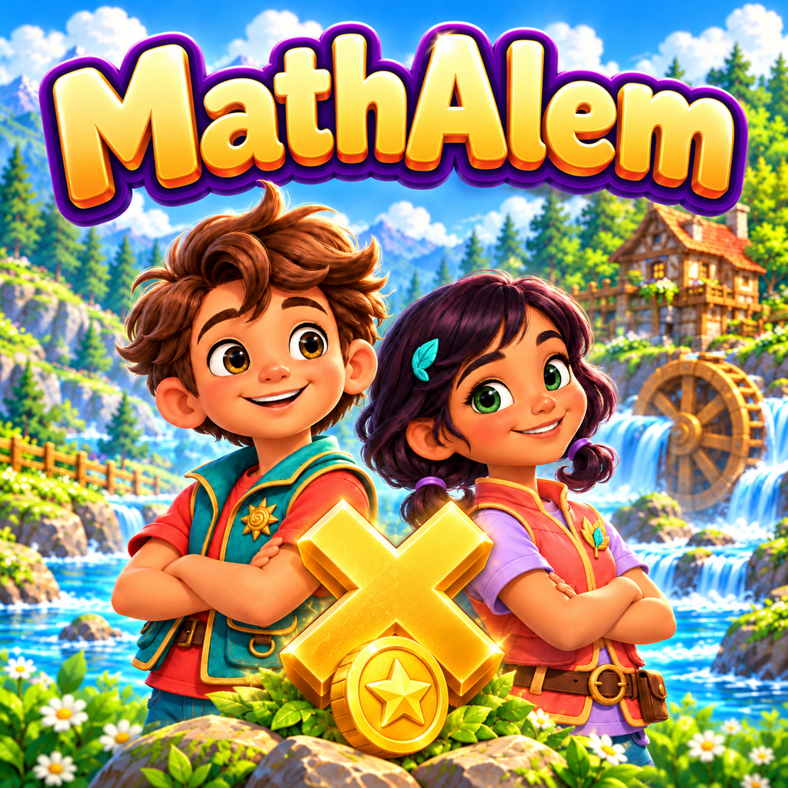

Learn through play
18 rounds: tables from 0 to 12, review rounds, and a Grand Final. Hints help explain the problems.

Islands of DiscoveryIslands of Discovery
Make multiplication a journey: explore islands, overcome obstacles, and discover new worlds — one problem at a time.
18 rounds: tables from 0 to 12, review rounds, and a Grand Final. Hints help explain the problems.
No lives or timers. Revisit a table you have completed and reinforce what you have learned.
Create your own rewards, review answers, and celebrate your child’s progress in a PIN-protected parent area.
Progress stays on your device. The game has no ads, third-party trackers, or mandatory registration. Parents manage rewards and review learning history in the app.
The background melody “Meadow Footsteps” and sound effects were created specifically for MathAlem For Kids with AI assistance and programmatic sound synthesis. No third-party recordings or sample libraries were used. The music and sound effects belong to the author of the app.